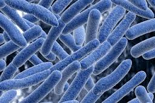
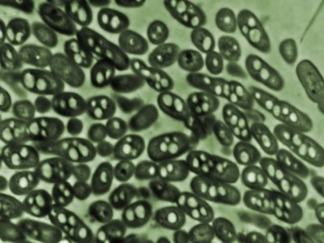

Many microorganisms possess the ability to transfer the electrons derived from the metabolism of organic matters to the anode.

Microbes like E.Coli are used in
MFCs
A list of them is shown in Table 1 together with their substrates. Marine sediment, soil, wastewater, fresh water sediment and activated sludge are all rich sources for these microorganisms. A number of recent publications discussed the screening and identification of microbes and the construction of a chromosome library for microorganisms that are able to generate electricity from degrading organic matters.
The anodic electron transfer mechanism in MFC is a key issue in understanding the theory of how MFCs work. As mentioned above, microbes transfer electrons to the electrode through an electron transport system that either consists of a series of components in the bacterial extracellular matrix or together with electron shuttles dissolved in the bulk solution. Geobacter belongs to dissimilatory metal reducing microorganisms, which produce biologically useful energy

Geobacter Species of Microbes
in the form of ATP during the dissimilatory reduction of metal oxides under anaerobic conditions in soils and sediments. The electrons are transferred to the final electron acceptor such as Fe2O3 mainly by a direct contact of mineral oxides and the metal reducing microorganisms. The anodic reaction in mediator-less MFCs constructed with metal reducing bacteria belonging primarily to the families of Shewanella, Rhodoferax, and Geobacteris similar to that in this process because the anode acts as the final electron acceptor just like the solid mineral oxides. Fig. 2 illustrates the chemical compounds proposed to be involved in the electron transportation from electron carriers in the intracellular matrix to the solid-state final electron acceptor (anode) in dissimilatory metal reducing microorganisms. S. putrefaciens, G. sulferreducens, G. metallireducens and R. ferrireducens transfer electrons to the solid electrode (anode) using this system.
Though most of the real mediator-less MFCs are operated with dissimilatory metal reducing microorganisms, an exception was reported with Clostridium butyricum. Mediators such as dye molecules and humic substances also have some effects on the mediator-less MFCs even though the anodophiles can transfer the electrons to the anode directly especially in the early stage of biofilm formation. Electron mediators like Mn4+ or neutral red (NR) incorporated into the anode noticeably enhance the performance of MFCs using anodophiles S.Putrefaciens. Mediators play an important role in electron transport for those microbes that are unable to transfer the electrons to the anode. Basic processes are shown as follows (Fig. 3). Mediators shuttle between the anode and the bacteria transferring the electrons. They take up the electrons from microbes and discharge them at the surface of the anode. Actinobacillus succinogenes, Desulfovibrio desulfuricans, E. coli, Proteus mirabilis, Proteus vulgaris, Pseudomonas fluorescens need extraneous mediators while some microbes can provide their own. For example, Pseudomonas aeruginosaproduces pyocyanin mole-cules as electron shuttles.
When an MFC is inoculated with marine sediments or anaerobic sludge, mixed cultured microbes are in the anode chamber. Usually mixed culture MFCs have good performances. Using complex mixed cultures (anodic microcosm) allows much wider substrate utilization. It means that the MFCs have much wider substrate specificity when mixed than do pure cultures. In mixed culture MFCs (with anaerobic sludge) there are both electrophiles/anodophiles and groups that use natural mediators together in the same chamber.Ieropoulos et al. (2005b) showed a relationship between power output and levels of sulphur compounds. Since there are always some naturally occurring levels of S-containing material in sludge, they showed that up to 70-80% of the power was due to sulphate/sulphide mediated system and only 20-30% due to electrophiles.
-
4th International MFC Conference

-
Different types of MFCs

-
Robo Insect Using MFC for Power

-
Schematic of MFCs

-
Waste Water Plant in Australia using MFCs

-
Search
- Themes
-
Share
-
-
Quick Links
Microbes in MFCs


Copyright ©
Sunbeam Schools, Lahartara
Designed by Arfat Salman and Rishabh Jain